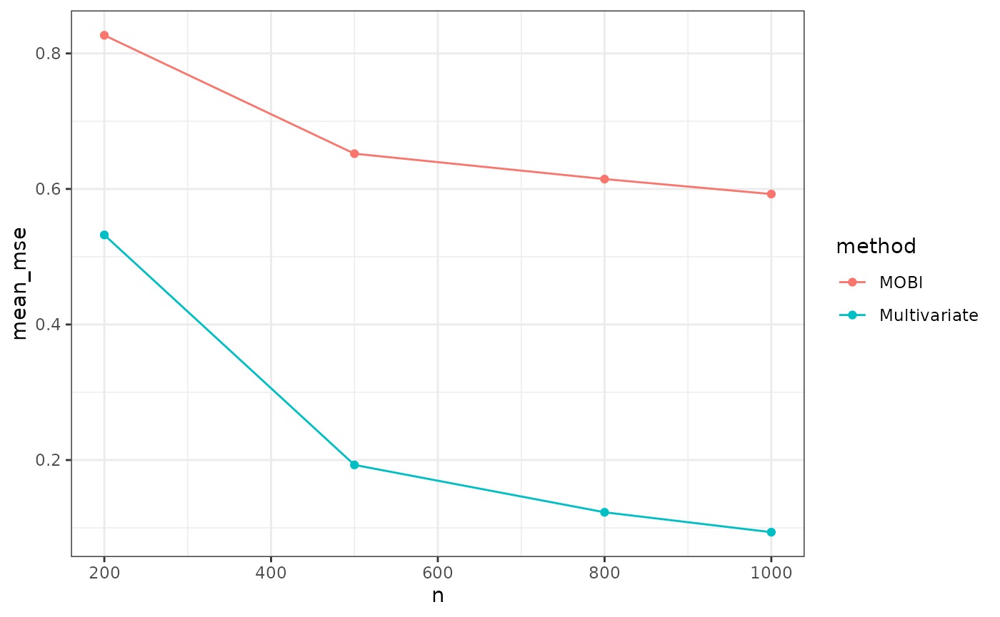

a03_Examples_Simulation.RmdIn this section a simple simulation study is performed on subgroup identification using ``benchtm’’ package. In this given example, the interest is to compare the MSE of estimated individual treatment effect from two methods: multivariate regression(Seber and Lee 2012) and Model-based recursive partition (MOB)(Athey and Imbens 2016). For MOB, we build node model \(Y = \beta_0 + \beta_1*trt + \beta_2*X\), where \(X\) is the union of selected variables from lasso model \(Y = \beta_0^* + \beta_1^*X\) on treatment subset and control subset separately. Users could modify this part of the code by implementing their own method and metrics for a comparison.
We generate the simulation data with \(f_{prog}(X) = 0.5*(X_3+X_7)\) and \(f_{pred}(X) = X_3\) with \(\beta_0 =0, \beta_1=2\). We fix the total number of covariates as \(p=20\) and vary the sample size from \(n = 200\) to \(n = 1000\). The simulation is replicated for 100 times in each scenario.
library(benchtm)
library(dplyr)
library(glmnet)
### generate simulation data
get_data <- function(n, p, seed = 1){
set.seed(seed)
X <- generate_X_dist(n, p, rho=0.5)
trt <- generate_trt(n, p_trt = 0.5)
temp_dat <- generate_y(X, trt, prog = "0.5*(X3+X7)",
pred = "X3", b0 = 0, b1 = 2,
type = "continuous", include_truth = TRUE,sigma_error = 1)
return(temp_dat)
}
multivariate <- function(X, Y, trt){
fitdat <- cbind(Y, trt, X)
all_vars <- paste0(colnames(X), collapse = "+")
form1 <- paste0("Y~trt+", all_vars, "+ trt:(", all_vars,")")
## fit linear models and perform global interaction test
fit1 <- lm(as.formula(form1), data=fitdat)
## predict individual treatment effects
pred1 <- predict(fit1, newdata=cbind(trt=1,X))
pred0 <- predict(fit1, newdata=cbind(trt=0,X))
tau_hat <- pred1-pred0
return(tau_hat)
}
var_select_lasso_tree <- function(X, Y, trt){
colnames(X) <- paste0(colnames(X),"_")
ind <- trt == 0
X0 <- X[ind,]
X1 <- X[!ind,]
Y0 <- Y[ind]
Y1 <- Y[!ind]
X0 <- model.matrix(~., data=X0, split = "_")[,-1]
X1 <- model.matrix(~., data=X1)[,-1]
fit0 <- glmnet::cv.glmnet(X0, Y0, family = "gaussian")
fit1 <- glmnet::cv.glmnet(X1, Y1, family = "gaussian")
get_fit_vars <- function(fit){
cf <- coef(fit, s="lambda.1se")
## selected variables
vars <- rownames(cf)[abs(as.numeric(cf))>0]
}
vars <- setdiff(union(get_fit_vars(fit0), get_fit_vars(fit1)),"(Intercept)")
unique(sapply(vars, function(xx) stringr::str_split(xx, "_")[[1]][1]))
}
mobl <- function(X, Y, trt){
## select union of variables that impact outcome on treatment and
## control (this will be a superset of the purely prognostic variables)
var_prog <- var_select_lasso_tree(X, Y, trt)
cov.names <- colnames(X)
dat <- cbind(Y, trt, X)
if(length(var_prog) == 0){
eqn <- paste0("Y ~ trt| ",
paste0(cov.names, collapse = "+"))
}else{
eqn <- paste0("Y ~ trt + ",paste0(var_prog, collapse = "+")," | ",
paste0(cov.names, collapse = "+"))
}
glmtr <- partykit::glmtree(as.formula(eqn), data = dat, family = "gaussian",
parm = 2, minsize = 0.2*nrow(dat), alpha=0.10, bonferroni=TRUE)
tau.hat <- predict(glmtr, newdata = dat %>% mutate(trt = 1), type = "response") -
predict(glmtr, newdata = dat %>% mutate(trt = 0), type = "response")
return(tau.hat)
}
sim_run_cont <- function(n, p, seed){
data <- get_data(n, p, seed)
Y <- data$Y
trt <- data$trt
X <- data %>% dplyr::select(starts_with("X"))
res_multivariate <- multivariate(X,Y,trt)
res_mobl <- mobl(X, Y, trt)
mse_multivariate <- mean((res_multivariate - data$trt_effect)^2)
mse_mobl <- mean((res_mobl - data$trt_effect)^2)
return(data.frame(mse = c(mse_multivariate, mse_mobl),
method = c("Multivariate", "MOBl"),
n = rep(n,2),
seed = rep(seed, 2)))
}
set.seed(2222) #set seed for random algorithms
var_change <- expand.grid(n = c(200, 500,800, 1000), seed = 1:100)
sim_result <- apply(var_change, 1, function(vars){
sim_run_cont(n = vars[1], p = 20, seed = vars[2])
}) %>% bind_rows()
saveRDS(sim_result, "sim_result.rds")We could make a plot to compare the MSE of the estimated treatment effect vs. the true treatment effect.
library(ggplot2)
library(dplyr)
sim_result %>% group_by(method, n) %>% summarize(mean_mse = mean(mse)) %>% ungroup() %>%
ggplot(aes(n, mean_mse, group = method, color = method)) + geom_point() + geom_line() + theme_bw()